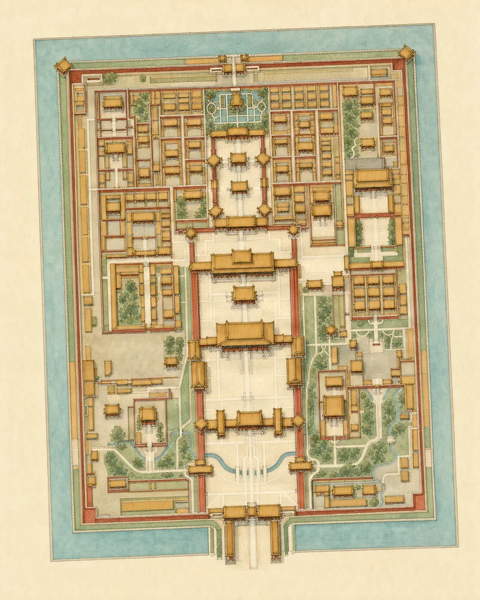
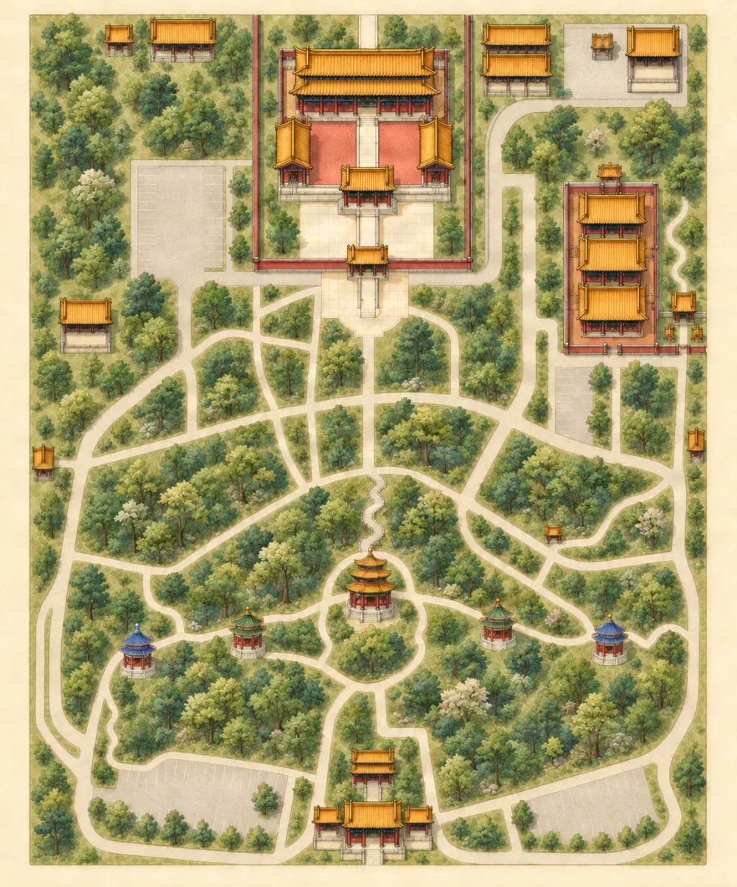
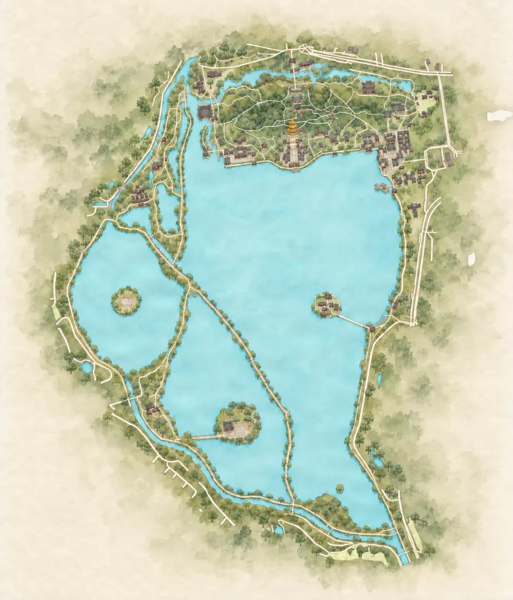
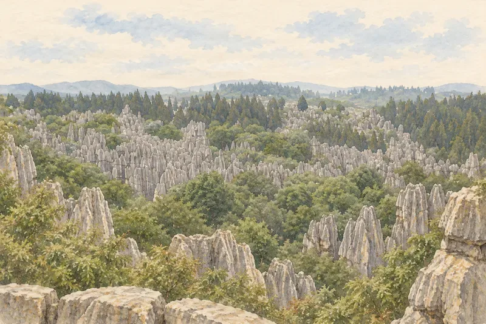
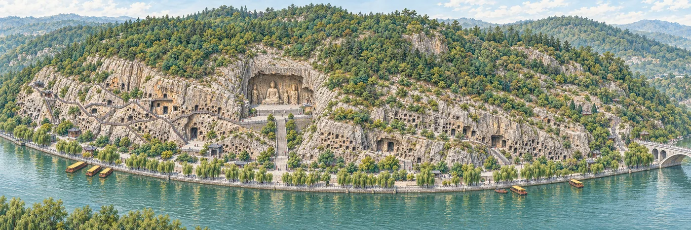
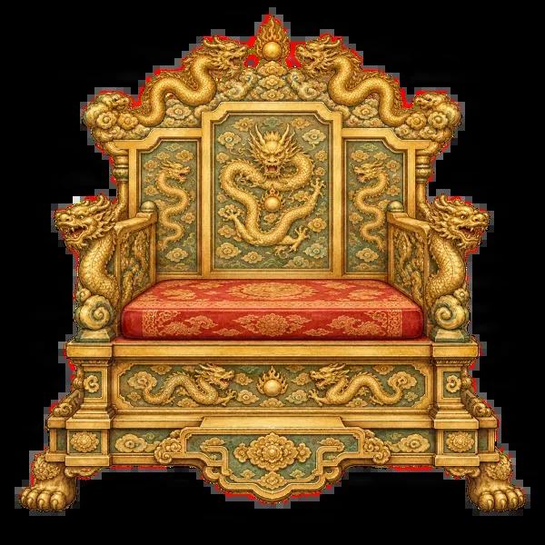

Free
Jingshan Park 景山公园
Climb to the hilltop pavilions for the classic view over the Forbidden City.
Offline audio guide · Beijing
An English guide for international visitors to Jingshan Park, the Forbidden City and the Summer Palace. Hand-drawn maps, narrated stories and ready-made walking routes, all on your iPhone, with no connection needed.
Free to download for iPhone. Jingshan Park is free; one purchase unlocks the rest.


3guides
129illustrated highlights
150+audio stories
0bars of signal needed

Try it now
Open the free Jingshan Park guide right here: tap places on the hand-drawn map, listen to the audio stories and follow a suggested route.
Open the guide →The guides
Free
Climb to the hilltop pavilions for the classic view over the Forbidden City.
Unlock All Guides
Courtyards, halls, carved guardians and the stories behind them, with routes for a short visit or a full day.

Unlock All Guides
Kunming Lake, Longevity Hill and the Long Corridor, with walking routes around the lake.
Every detail has a story
Bronze lions guarding the gates, the crane and tortoise before the throne hall, a golden celestial globe, the sundial that told imperial time. Penyola points them out on the map and tells you why they are there.
What's inside
Every site is drawn by hand. Pinch, zoom and tap any building.
129 illustrated highlights, from throne halls to the roof beasts most visitors miss.
150+ audio stories in two English voices, to play as you walk.
Suggested walks with times and distances between stops.
Opening hours, ticket notes, entrances and a Chinese address card for your taxi driver.
Everything is on your phone. No account, no sign-in, no ads.
Drawn by hand
Every guide comes with watercolour-style drawings of what you'll see: imperial halls today, and soon cave temples, carved Buddhas, karst peaks and lakes from the guides we're drawing now.




In the works
We're drawing guides to more than 30 other sites across China. Here are a few of the maps in progress. Unlock All Guides includes every guide we add, at no extra cost.



Previews of work in progress. Which guides arrive first, and when, isn't decided yet.
Pay once
Jingshan Park is free and complete. You can open the Forbidden City and Summer Palace maps before you buy. A single in-app purchase, Unlock All Guides, unlocks their stories, audio and routes, plus every guide added later.
US$6.99 one time · no subscription · nothing renews
Price shown is for the United States; the App Store shows your local price.



,_Longmen_Grottoes_(14250928764).jpg){kind=link}
.jpg){kind=link}